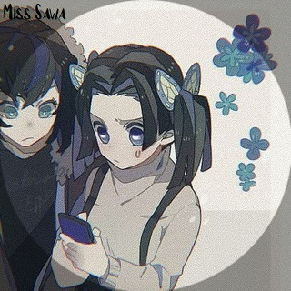

Отто Ай
имя: Отто Ай
дата рождения: 2.09.2007
возраст: 15 лет
Девушку травили в школе из за цвета глаз. как можно заметить у неё гетерохрамия. когда у неё появилась подруга който, Ай перестала обращать внимание на травли. но в один день Който прыгнула с крыши. после этого отто перевелась на домашние обучение
характер: спокойная, иногда весёлая. Часто находит общий язык с кем либо. редко может найти тему для разговора или постоять за себя